2025-2026学年七年级数学上学期期末模拟卷
强化卷·全解全析
（考试时间：120分钟 试卷满分：120分）
注意事项：
1．答卷前，考生务必将自己的姓名、准考证号填写在答题卡上。
2．回答选择题时，选出每小题答案后，用铅笔把答题卡上对应题目的答案标号涂黑。如需改动，用橡皮擦干净后，再选涂其他答案标号。回答非选择题时，将答案写在答题卡上。写在本试卷上无效。
3．考试结束后，将本试卷和答题卡一并交回。
4．测试范围：北师大版2024七年级上册第一章~第六章。
一、选择题（本题共10小题，每小题3分，共30分。在每小题给出的四个选项中，只有一项是符合题目要求的。）
1．如图所示的几何体是由几个相同的小立方块搭成的几何体，那么从上面看这个几何体得到的平面图形是（ ）
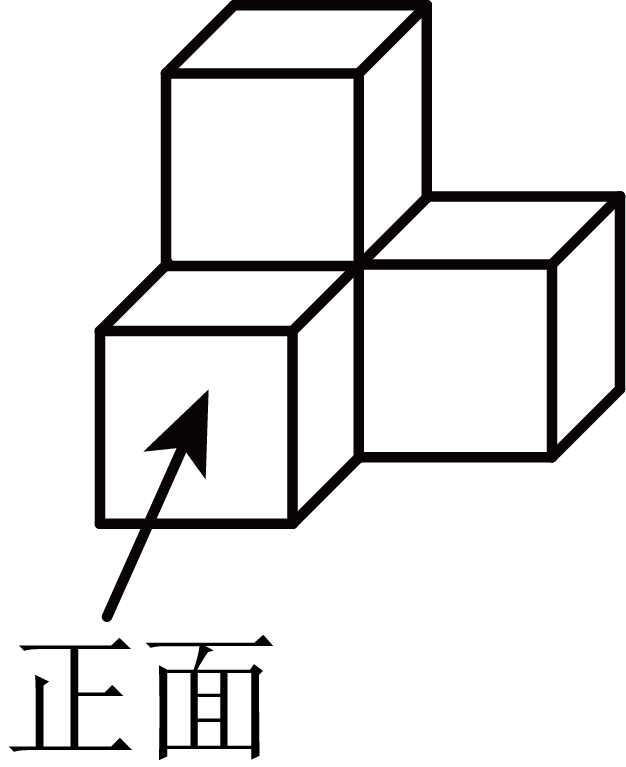
A． B．
B．
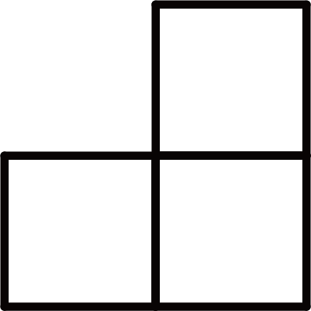
C．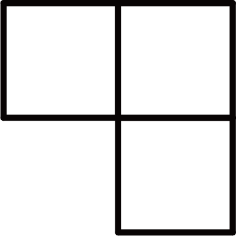
D．
【答案】A
【分析】本题考查了从不同方向看几何体的知识，找出从几何体上面看得到的图形即可．
【详解】
解：从几何体上面看可得，
故选：A．
2．下列各组数中，相等的是 （ ）
A． 与
与 B．
B． 与
与 C．
C． 与
与 D．
D． 与
与 
【答案】D
【分析】本题考查有理数的乘方、相反数及绝对值．根据有理数的乘方，相反数的定义，绝对值的性质对各选项分别进行计算，然后利用排除法求解．
【详解】解：A、∵
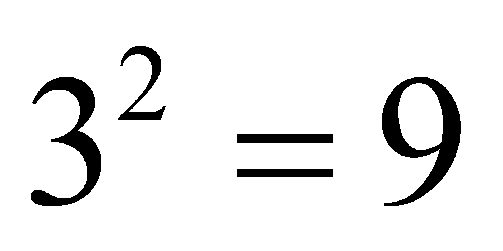
， ，∴
，∴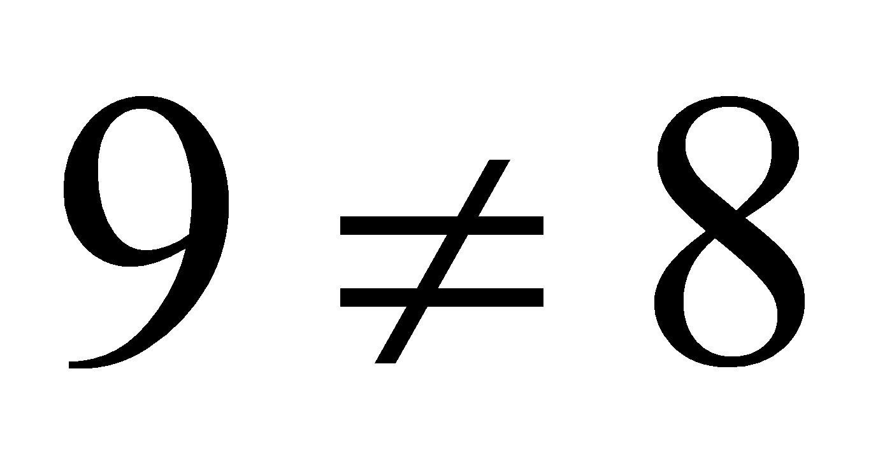
，不相等，故此选项不符合题意；B、∵
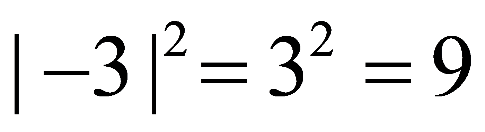
，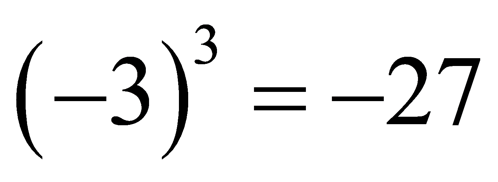
，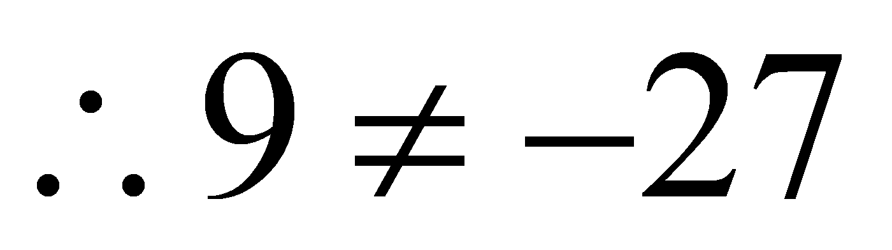
，不相等，故此选项不符合题意；C、∵ ，
，
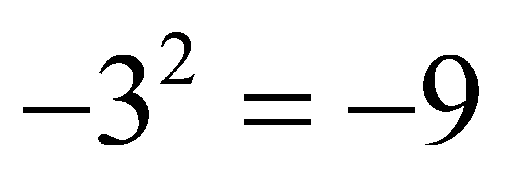
，∴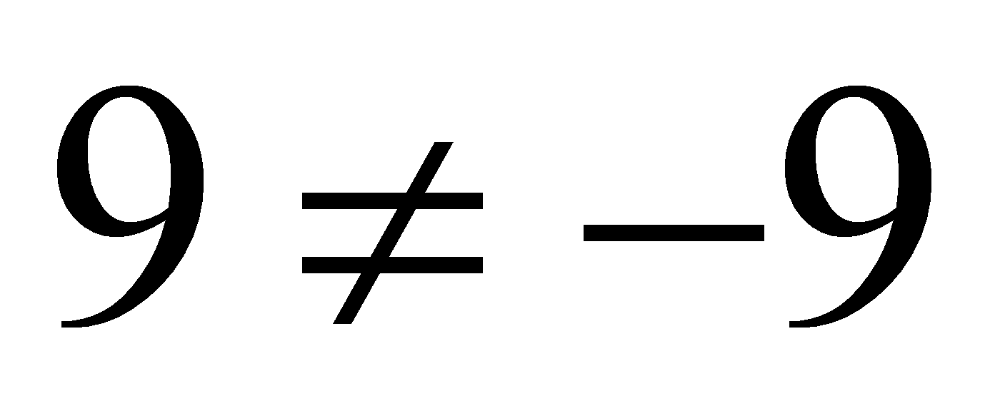
，不相等，故此选项不符合题意；D、∵，
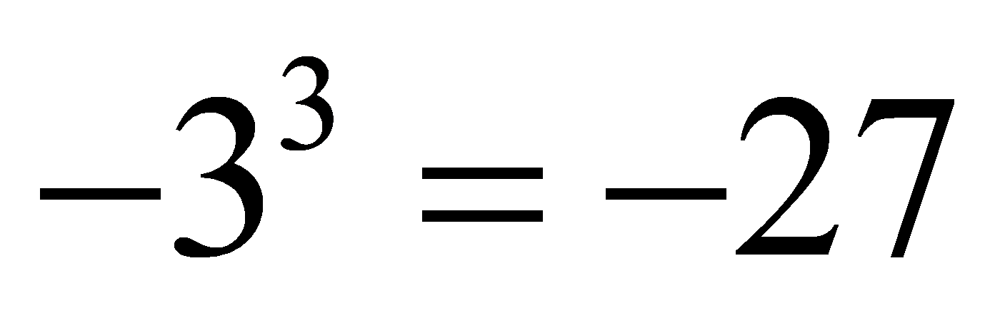
，∴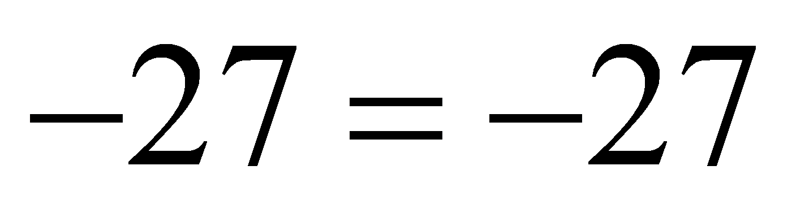
，相等，故此选项符合题意；故选：D．
3．下列说法错误的是（ ）
A．若 ，则
，则 B．若
B．若 ，则
，则
C．若 ，则
，则 D．若
D．若 ，则
，则
【答案】C
【分析】本题考查了等式的基本性质，根据等式的基本性质逐项判断即可，解题的关键是正确理解等式性质： 、等式的两边同时加上或减去同一个数或字母，等式仍成立；
、等式的两边同时加上或减去同一个数或字母，等式仍成立； 、等式的两边同时乘以或除以同一个不为
、等式的两边同时乘以或除以同一个不为 数或字母，等式仍成立．
数或字母，等式仍成立．
【详解】解： 、若，则，原选项正确，不符合题意；
、若，则，原选项正确，不符合题意；
 、若，则，原选项正确，不符合题意；
、若，则，原选项正确，不符合题意；
 、若，当
、若，当 时，则，原选项错误，符合题意；
时，则，原选项错误，符合题意；
 、若，则，原选项正确，不符合题意；
、若，则，原选项正确，不符合题意；
故选：．
4．已知实数a，b，c满足
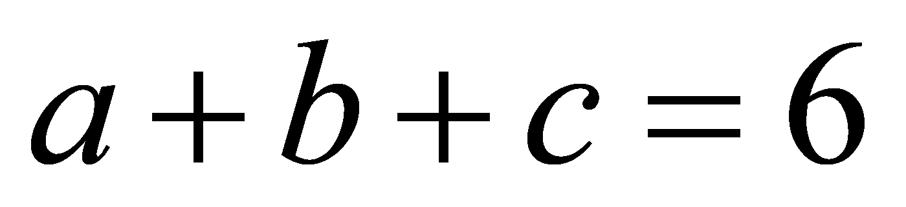
，则当 时，代数式
时，代数式 的值是（ ）
的值是（ ）A．7 B． C．
C． D．5
D．5
【答案】B
【分析】本题考查的是求解代数式的值，将代入代数式，利用已知条件直接计算．
【详解】解：∵ ，
∴
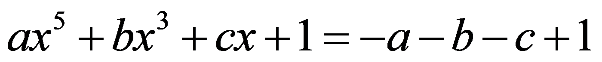
，又 ∵，
∴ 原式
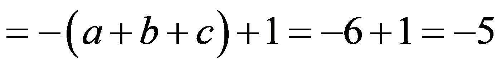
．故选：B
5．竹竿作为一种常见的天然植物材料，具有多种作用和功效，如图，将一根竹竿 从
从 处分成两部分，截断后的各段竹竿中有一段长为
处分成两部分，截断后的各段竹竿中有一段长为
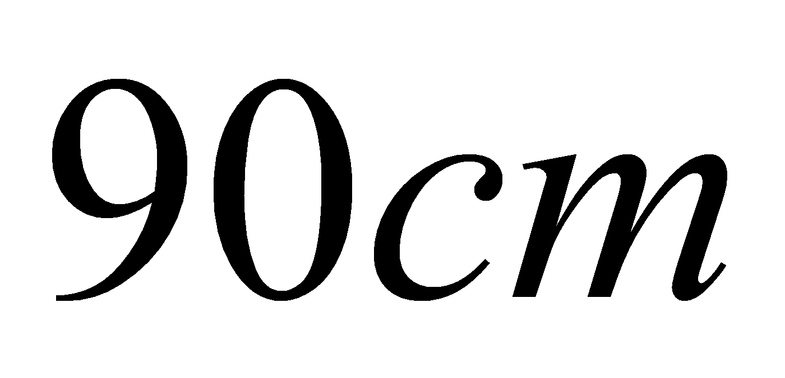
，若 ，则这根竹竿的原长为（ ）
，则这根竹竿的原长为（ ）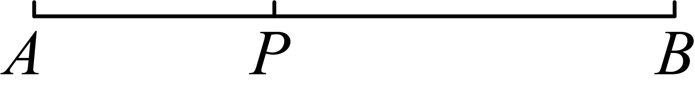
A． 或
或
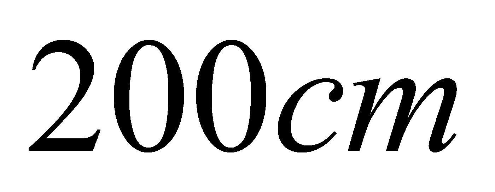
B．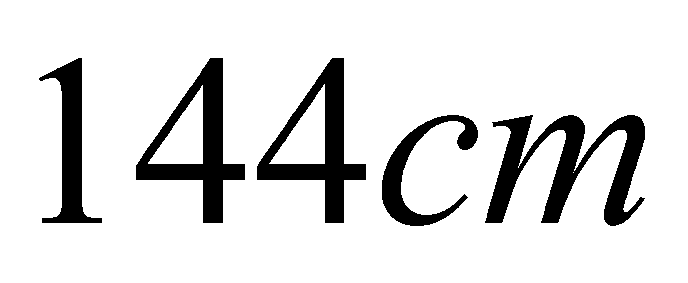
或C．或
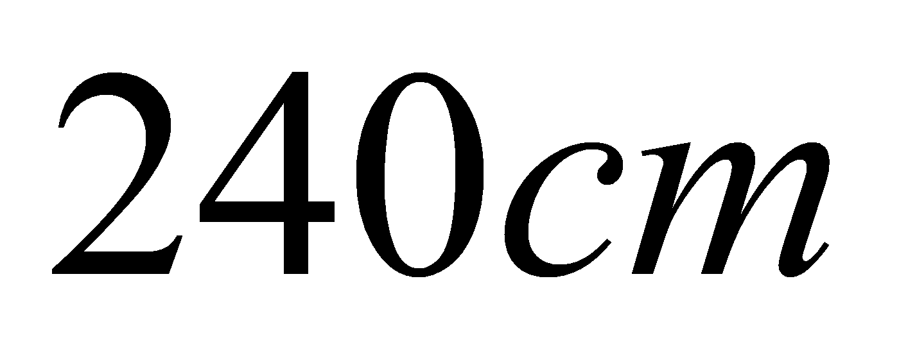
D．或【答案】C
【分析】本题考查了线段的和差，比例，正确理解比例关系及分情况讨论是解题的关键．分两种情况讨论求解即可．
【详解】解：分两种情况：
当
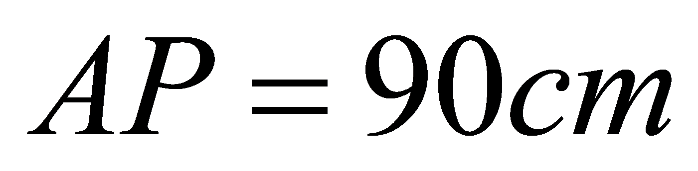
时，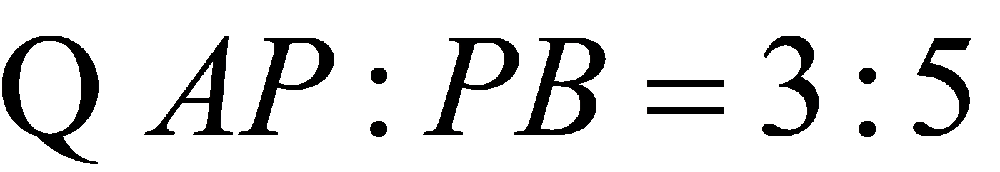
，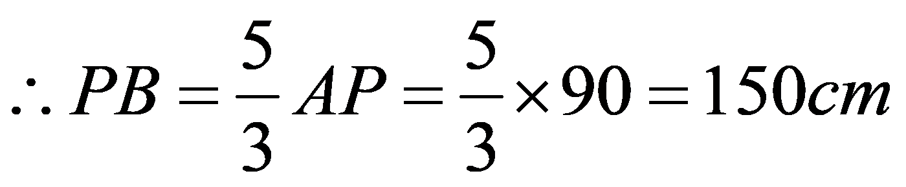
，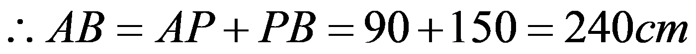
；当
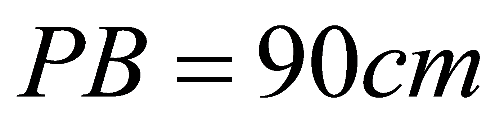
时，则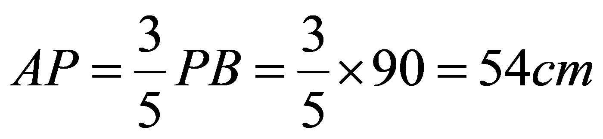
，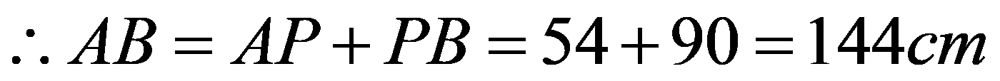
．综上，这根竹竿的原长为或．
故答案为：C．
6．下列调查中，适合采用全面调查（普查）方式的是（ ）
A．对我市中学生观看电影《南京照相馆》情况的调查
B．调查琼江河的水质情况
C．调查某班学生视力情况
D．调查全国初一中学生的平均身高
【答案】C
【分析】本题考查了全面调查，全面调查（普查）适用于调查对象数量较少、易于全面进行的情况．选项C中，某班学生数量有限，适合普查；其他选项调查范围广、对象多，适合抽样调查．
【详解】解：∵全面调查需要对所有调查对象进行逐一调查，
∴适用于对象数量少、调查简便的情况．
选项A（全市中学生）、B（整条河流）、D（全国初一中学生）对象数量多或范围广，普查成本高、难度大，不适合；选项C（某班学生）对象数量少，易于全面调查，
故选：C．
7．如图，点A、O、B在同一直线上， 平分
平分 ，
，
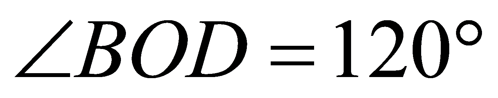
，则 的度数是（ ）
的度数是（ ）
A． B．
B． C．
C． D．
D．
【答案】A
【分析】本题考查了角平分线的有关计算，解题的关键是根据角平分线找出角的等量关系．
由平角定义得
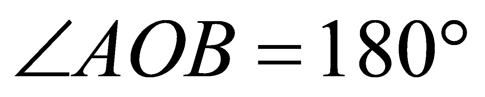
，计算，然后利用角平分线定义即可解答．【详解】解：因为点A、O、B在同一直线上，
所以 是平角，即．
是平角，即．
因为，
所以
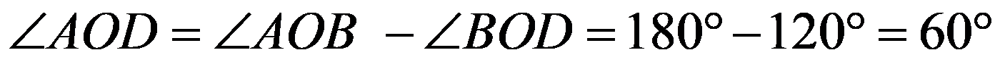
．又因为平分，
所以
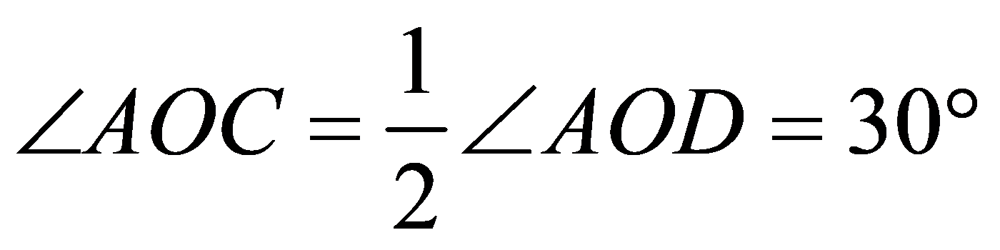
．故选：A．
8．王老师将正确的演算过程书写在黑板上，随后用手掌捂住了如图所示的一个二次三项式，则所捂的多项式为（ ）
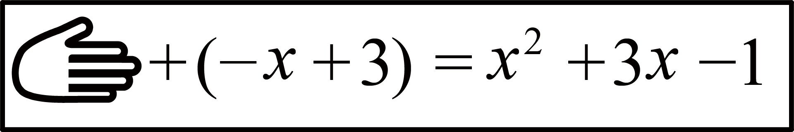
A．
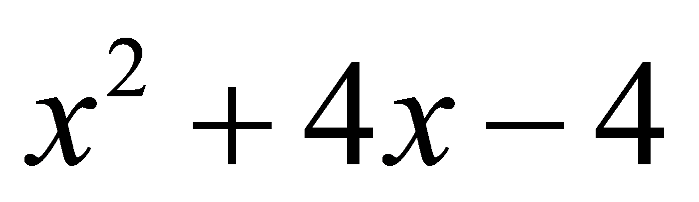
B．
C． D．
D．
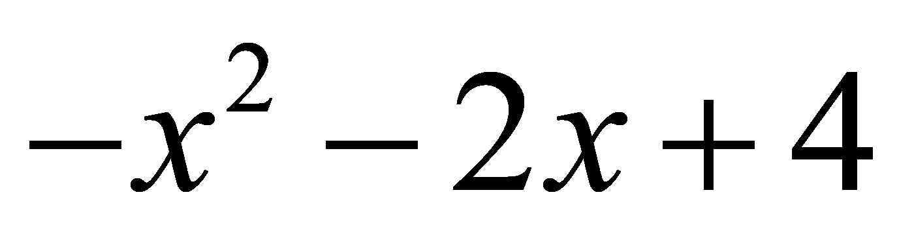
【答案】A
【分析】本题考查了整式的加减运算，解题的关键是根据“加数 和
和 另一个加数”列出算式并计算．
另一个加数”列出算式并计算．
【详解】解：设所捂的多项式为 ，
，
由题意得
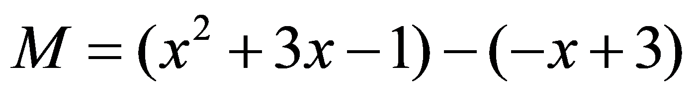
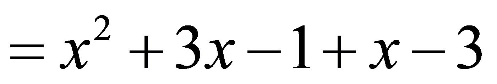
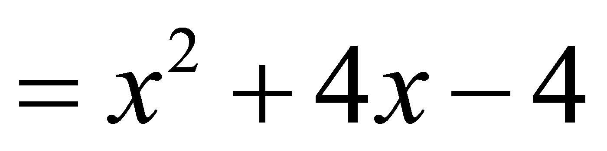
．故选：A．
9．古书上有这样一个问题：“今有人买鸡，人出六，盈五；人出五，不足二．问人数、物价各几何．”意思是有若干人一起买鸡，如果每人出6文钱，就多出5文钱；如果每人出5文钱，就差2文钱．买鸡的人数、买鸡的费用分别是多少？若设买鸡的人数是x人，根据题意列一元一次方程正确的是（ ）
A．
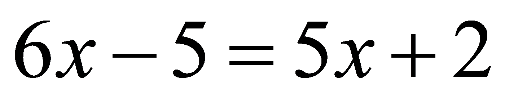
B．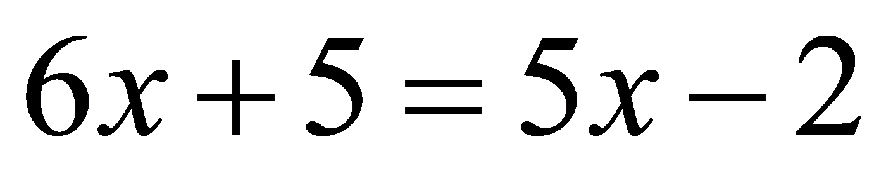
C．
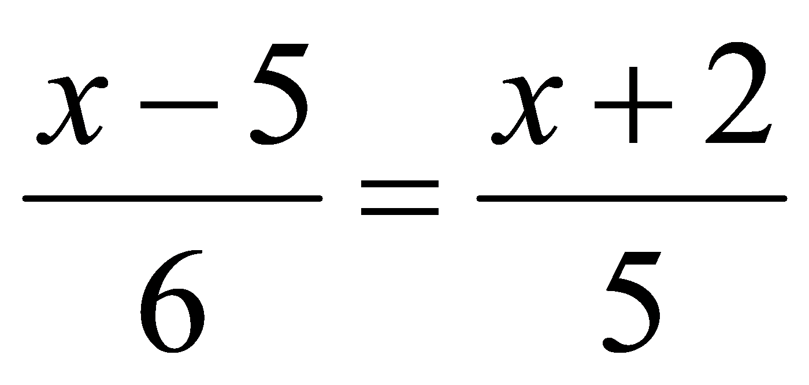
D．
【答案】A
【分析】本题考查了一元一次方程的古代问题，正确的运算是解题的关键．
设买鸡的人数为x人，根据实际费用不变，由两种出钱方式分别表示费用并相等，列出方程，即可．
【详解】解：设买鸡的人数为x人，根据题意得：
．
故选：A
10．下列说法中，错误的个数是（ ）
①若 ，则
，则 ；
；
②若 ，则有
，则有 是负数：
是负数：
③A、B、C三点在数轴上对应的数分别是 、6、x，若相邻两点的距离相等，则
、6、x，若相邻两点的距离相等，则 ；
；
④若代数式 的值与
的值与 无关，则该代数式值为2024；
无关，则该代数式值为2024；
⑤若 ，
， ，则
，则 的值为
的值为 ．
．
A．1个 B．2个 C．3个 D．4个
【答案】C
【详解】解：①若，则，故①正确，不符合题意；
②若 ，
，
当 ，
， 时，
时， ，则
，则 ，
， ，此时
，此时
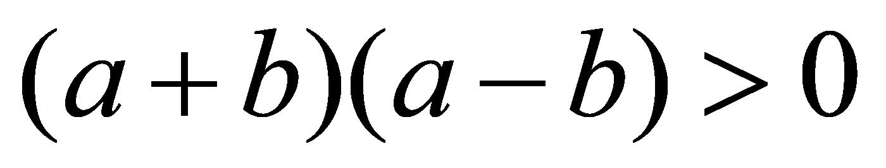
；当， 时，，则，，此时；
时，，则，，此时；
当，时， ，则
，则 ，
， ，此时；
，此时；
当，时，，则，，此时；
 ，故②错误，符合题意；
，故②错误，符合题意；
③ 、
、 、
、 三点在数轴上对应的数分别是、6、，若相邻两点的距离相等，则或
三点在数轴上对应的数分别是、6、，若相邻两点的距离相等，则或 或14，故③错误，符合题意；
或14，故③错误，符合题意；
④若代数式的值与无关，
则
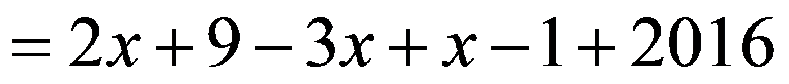
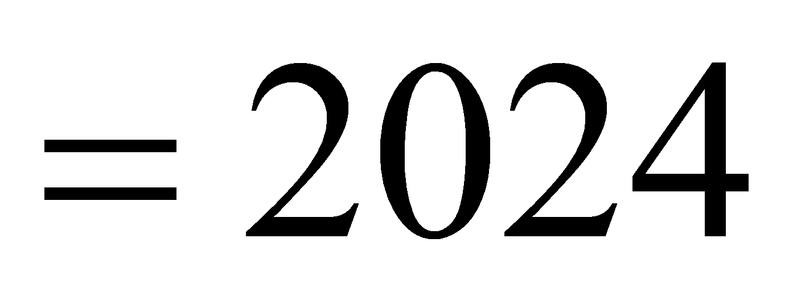
，故④正确，不符合题意；⑤
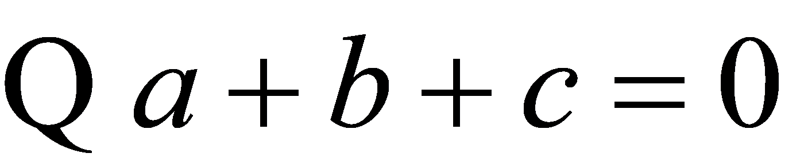
，， 、
、 、
、 中一定是一正两负，
中一定是一正两负， ，
， ，
， ，
，
不妨设，， ，
，
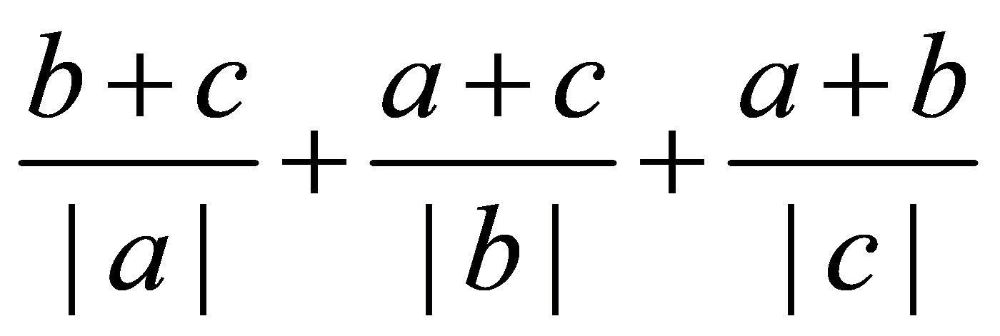
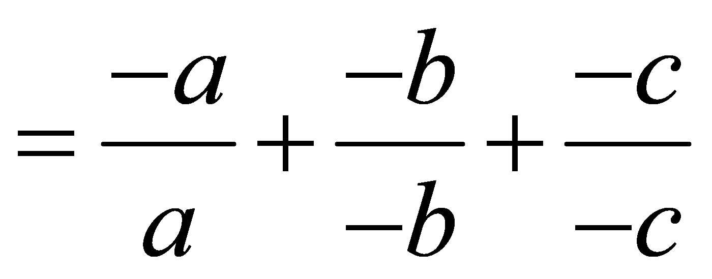

 ，故⑤错误，符合题意；
，故⑤错误，符合题意；
故选：C．
填空题（本题共6小题，每小题3分，共18分．）
11．计算：
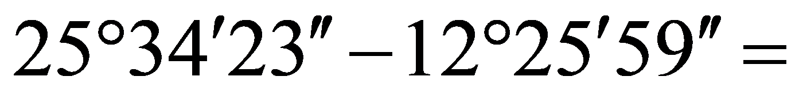
．【答案】
【分析】此题考查了角度的计算，分别计算度、分、秒，单位间进率为60，不够减时借位．
【详解】
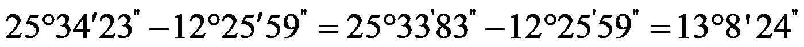
．故答案为：．
12．某高铁站出站后有出租车、地铁、汽车、公交等出行方式，高铁站为调查各个出行方式的人流，先对1000人展开调查，结果如图所示，那么某日高铁站出站客流约为24000人，其中有约 人选择出租车．

【答案】2400
【详解】解：根据题意，出租车占比为：
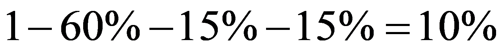
，故客流约为24000人，其中有约
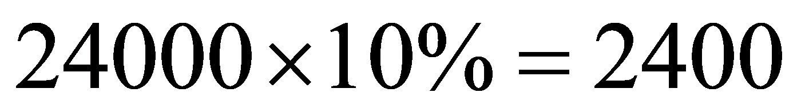
（人）选择出租车，故答案为：2400．
13．多项式： 的值与x，y的取值无关， 则的值为
的值与x，y的取值无关， 则的值为
【答案】
【分析】本题考查了整式的加减运算的无关型问题，已知字母的值求代数式的值．先合并同类项，得出，再结合“与x，y的取值无关”，得 ，，解得 ，
， ，代入，进行计算，即可作答．
，代入，进行计算，即可作答．
【详解】解：
∵多项式的值与， 无关，
无关，
∴ ，，
∵，，
则 ，
故答案为：．
14．按图所示的程序计算，如果输入的数是 ，那么输出的结果是 ．
，那么输出的结果是 ．
【答案】47
【分析】本题考查了程序框图与有理数的混合运算，理解程序框图的运算法则是关键．
根据程序框图的运算进行计算即可．
【详解】解：第一次：，
第二次：，计算结束，输出的数是．
故答案为：．
15．幻方是古老的数学问题，我国古代的《洛书》中记载了最早的幻方．将9个数填在 的方格中，如果满足每行、每列、每条对角线上的三个数字之和都相等，就得到一个广义的三阶幻方．如图是一个未完成的广义三阶幻方，根据已知的3个数，可得
的方格中，如果满足每行、每列、每条对角线上的三个数字之和都相等，就得到一个广义的三阶幻方．如图是一个未完成的广义三阶幻方，根据已知的3个数，可得 ．
．
【答案】
【分析】本题考查了一元一次方程的应用，解题的关键是根据幻方的特征找到等量关系．根据题意可得：，求出 的值，即可求解．
的值，即可求解．
【详解】解：由图可知：，
解得，，
则．
故答案为：．
16．将（1）和（2）两张正方形纸片按图示两种方式放置在同一个长方形中．图（1）中阴影部分的周长和为 ，图（2）中阴影部分的周长和为
，图（2）中阴影部分的周长和为 ，且
，且 ．若，
．若， ，则正方形①的边长为 ．
，则正方形①的边长为 ．
【答案】/
【详解】解：设 ，正方形①边长为a，正方形②边长为b，
，正方形①边长为a，正方形②边长为b，
 ，
，
则图（1）中阴影部分的周长和，
，
图（2）中阴影部分的周长和为：
，
，
，
解得，
故答案为： ．
．
解答题（本题共8小题，第17-21题每题8分，第22-23题每题10分，第24题12分，共72分．解答应写出文字说明、证明过程或演算步骤．）
17．计算∶
(1)
(2)
【答案】(1)
(2)
【详解】（1）解：

 ；
；
（2）解：

18．解方程
(1) ；
；
(2)．
【答案】(1)
(2)
【详解】（1）解：
去括号，得
移项得：
合并同类项得：
系数化为1得：
（2）解：
去分母得：
去括号得
移项得：
合并同类项得：
系数化为1得：
19．先化简，再求值： ．其中
．其中 ，
， ．
．
【答案】；5
【分析】本题考查整式加减中的化简求值，去括号，合并同类项，化简后，代值计算即可．
【详解】解：原式
 ；
；
当，时，原式．
20．为了实现教育部部长怀进鹏提出的在大课间 分钟内让学生心里有阳光，身体能出汗，在身心健康中，为我们的学生、为我们的未来奠定好的基础，实验中学校团支部随机抽取了若干位学生进行问卷调查（要求每位学生只能填写一种自己喜欢的活动），并将调查的结果绘制成如下的两幅不完整的统计图，请根据图中信息，解答下列问题：
分钟内让学生心里有阳光，身体能出汗，在身心健康中，为我们的学生、为我们的未来奠定好的基础，实验中学校团支部随机抽取了若干位学生进行问卷调查（要求每位学生只能填写一种自己喜欢的活动），并将调查的结果绘制成如下的两幅不完整的统计图，请根据图中信息，解答下列问题：

(1)参加调查的人数共有 人，在扇形图中，表示“C”的扇形圆心角的度数为 度；
(2)补全条形统计图，并计算扇形统计图中的m；
(3)估计全校 人中喜欢球类运动的有多少人．
人中喜欢球类运动的有多少人．
【答案】(1)
(2)，图见详解
(3) 人
人
【详解】（1）解：由图可知：参加调查的人数共有： 人；
人；
表示“C”的人数为： 人；
人；
∴表示“C”的扇形圆心角的度数为：；
（2）解： ，
，
∴；
补全条形统计图如下：
（3）解： 人，
人，
∴全校人中喜欢球类运动的有人；
21．如图是一个几何体的侧面展开图．

(1)请写出这个几何体的名称；
(2)请根据图中所标的尺寸，计算这个几何体的侧面积．
【答案】(1)六棱柱
(2)18
【分析】本题考查了几何体的展开图以及几何体的表面积，六棱柱的侧面积等于六个矩形的面积．
（1）根据几何体的表面展开图，可得出几何体是六棱柱；
（2）由图可得侧面积等于六个矩形的面积．
【详解】（1）解：这个几何体的名称是六棱柱；
（2）解：侧面积为：．
22．如图，已知线段 ，点M是的中点，点C在线段
，点M是的中点，点C在线段 上，且
上，且 ．
．

(1)求线段 的长；
的长；
(2)若点N是的中点，求线段 的长．
的长．
【答案】(1)
(2)
【分析】本题考查线段的中点，线段的和差．
（1）先根据线段的中点定义得到 ，再由线段的和差得到即可；
，再由线段的和差得到即可；
（2）根据线段的中点得到 ，再根据
，再根据 求解即可．
求解即可．
【详解】（1）解：∵，点M是的中点，
∴
∵，
∴
（2）解：∵N是的中点， ，
，
∴，
∴ ．
．
23．列方程解应用题
某商场经销甲、乙两种畅销产品，甲种产品每件进价50元，乙种产品每件进价80元．为了迎接“双十一购物节”活动，该商场花费12400元提前购进甲、乙两种商品共200件．
(1)该商场分别购进甲、乙两种产品多少件．
(2)若甲种产品的标价是进价的3倍，每件乙种产品按标价出售可获得利润120元．“双十一购物节”期间，商场对这两种产品进行优惠促销活动：甲种产品每件降价 元，乙种产品打m折出售．将这200件产品卖完后，商场最终获利13600元，求m的值．
元，乙种产品打m折出售．将这200件产品卖完后，商场最终获利13600元，求m的值．
【答案】(1)商场购进甲产品120件，购进乙产品80件
(2)8
【分析】本题主要考查一元一次方程的应用：
（1）设商场购进甲产品件，购进乙产品件，可得 ；
；
（2）根据“总利润=总售价-总成本”的思路，列出方程即可求解
【详解】（1）解：设商场购进甲产品件，购进乙产品件，
根据题意，得
解得
 （件）
（件）
答：商场购进甲产品件，则购进乙产品 件．
件．
（2）根据题意，得
解得
24．已知：如图1，分别为锐角内部的两条动射线，当运动到如图的位置时，
(1)求 的度数；
的度数；
(2)如图2，射线分别为 的平分线，求
的平分线，求 的度数．
的度数．
(3)如图3，若是外部的两条射线，且 平分
平分 ，
， 平分
平分 ，当绕着点O旋转时，
，当绕着点O旋转时， 的大小是否会发生变化，若不变，求出其度数，若变化，说明理由．
的大小是否会发生变化，若不变，求出其度数，若变化，说明理由．
【答案】(1)；
(2) ；
；
(3)的大小不会变化，理由见详解．
【详解】（1）解：
 ，
，
；
（2）
射线分别为的平分线，


（3）
的大小不会变化，理由如下：


又平分，平分，
 ．
．